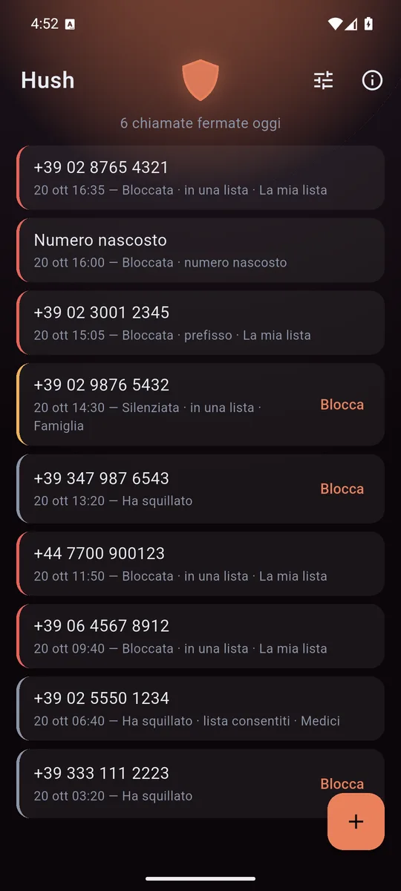
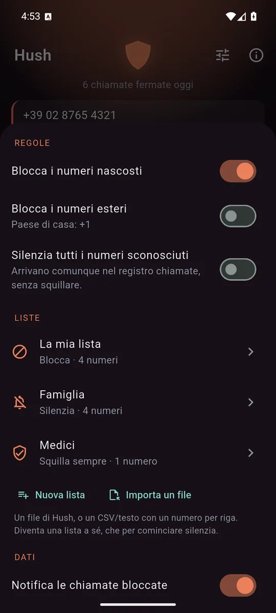
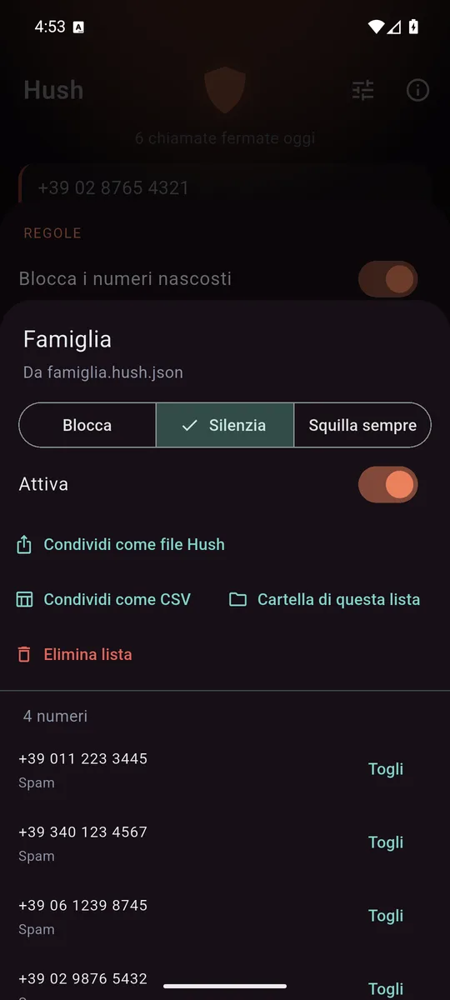
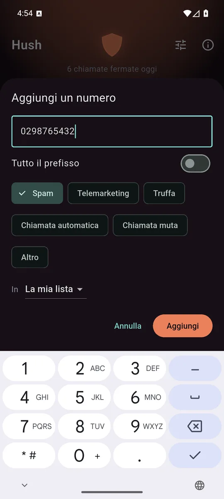

ItalianoEnglish
Every call from a number that is not in your contacts goes through Hush, which decides on the phone whether it rings, is silenced or is blocked. No number is sent anywhere to be checked: the decision is made right there, in an instant, with your lists and your rules.
The first screen is the log: every screened call, what happened and why. A call blocked by mistake is never a mystery, and a number that bothered you is blocked with one tap.

Every call, and the reason. The shield warms up when the phone has been busy. 
Rules that work from the first minute, and lists that do different things. 
A received list stays apart, and silences rather than blocks to start with. 
A number or a whole prefix, with the reason, in the list you choose.
What it does
- One tap on "Block" next to a call, and that number never rings again.
- Rules without lists: block hidden numbers, block foreign numbers, silence every unknown number.
- Whole prefixes: "+44 20 7…" and everything that starts that way.
- Several lists, each with its own behaviour: block, silence, or always ring — for the doctor who calls from a hidden number, and has to win over the hidden-number rule.
- A notice after a block, a single one that updates: a morning of telemarketing is one line, not twelve.
- In English and Italian, following the phone's language.
Why no public database
Apps like this check every number against their own server, and so build an archive of who calls whom. A public list fed by reports has another problem too: scammers spoof real numbers, and whoever ends up on that list is often somebody who has nothing to do with it.
Hush has no servers. The lists stay on the phone, and if you want to share them, you do — with the people you trust.
Lists to share
A list is exported as a file — a Hush file, or a CSV for whoever keeps it in a spreadsheet — and you send it with whatever you already use. Whoever receives it imports it: it becomes a list of its own, kept apart from theirs, that silences rather than blocks to start with. If it does not convince, it is switched off or deleted in one go, without touching the numbers they chose themselves.
For those who want more there is the syncable folder: the lists move to a folder that Syncthing, Mega or Drive can copy between your devices, or to another person. One file per number, so two phones that were apart do not break each other's lists.
What it does not ask for
Hush works with the Caller ID & spam role, which you grant and can take back any time from the phone's settings. With that role Android hands it only the calls from numbers not in your contacts, which is why Hush does not read your contacts or the call log and does not ask for the permissions to do so.
How it pays for itself
With a banner anchored at the bottom, and that is all: no subscription, no feature held hostage. Neither the log nor the lists reach the ad network.
Where to get it
Hush on Google Play. Requires Android 10 or later.